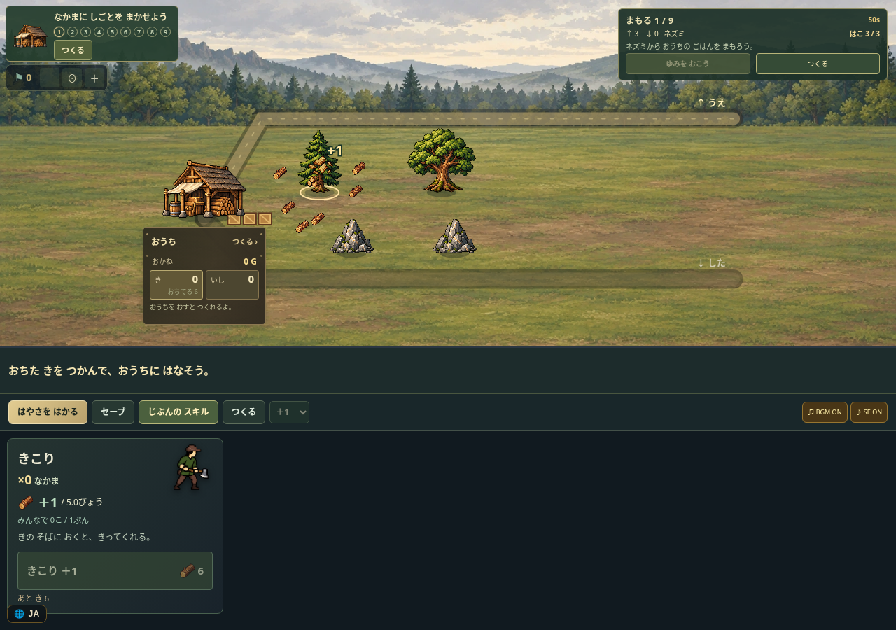
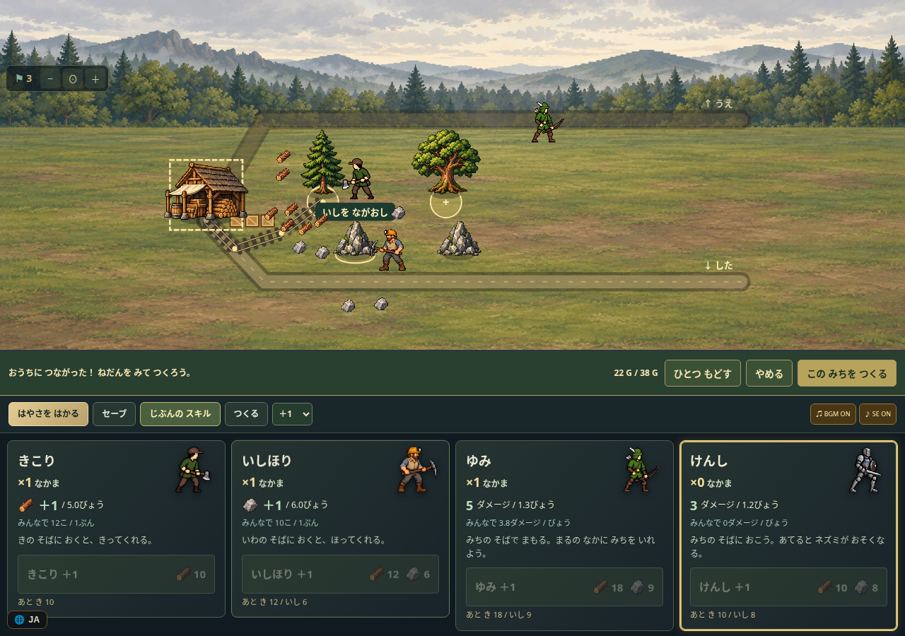
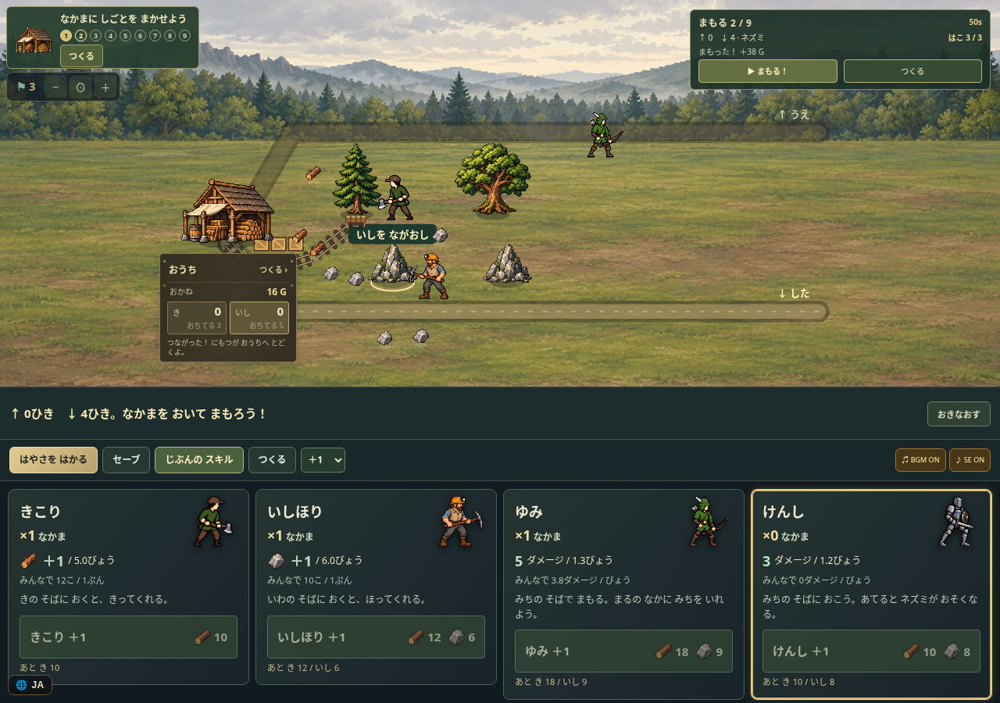
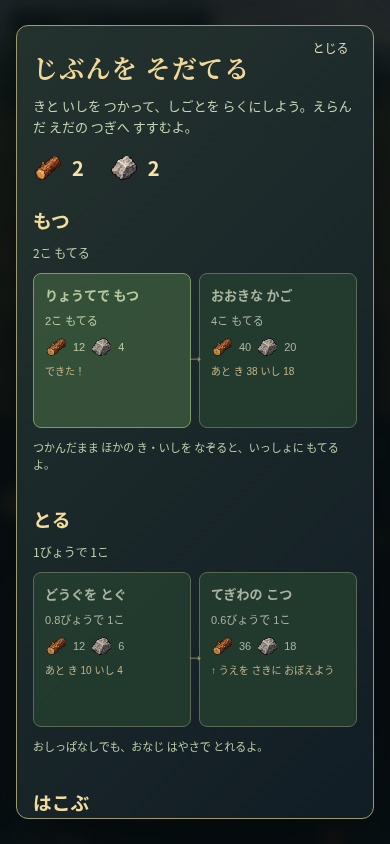
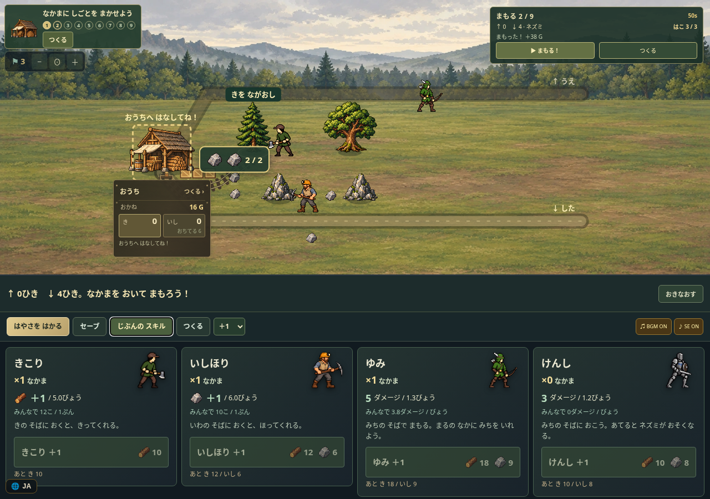
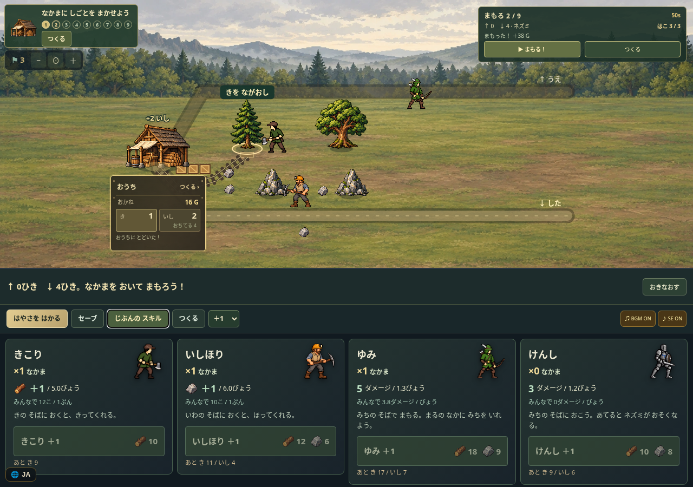
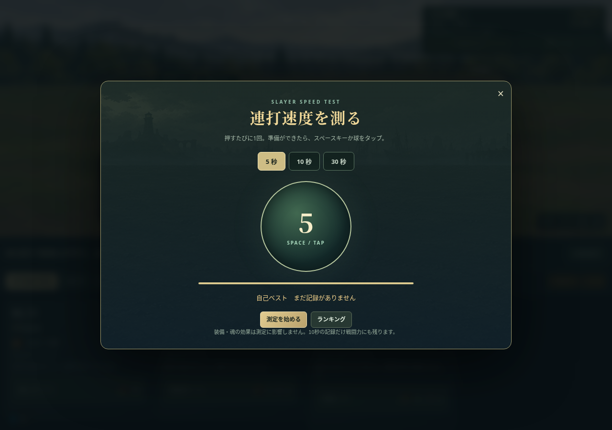
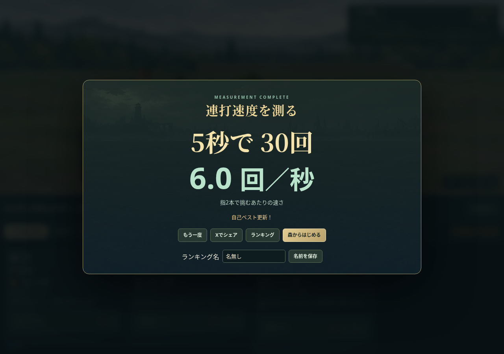
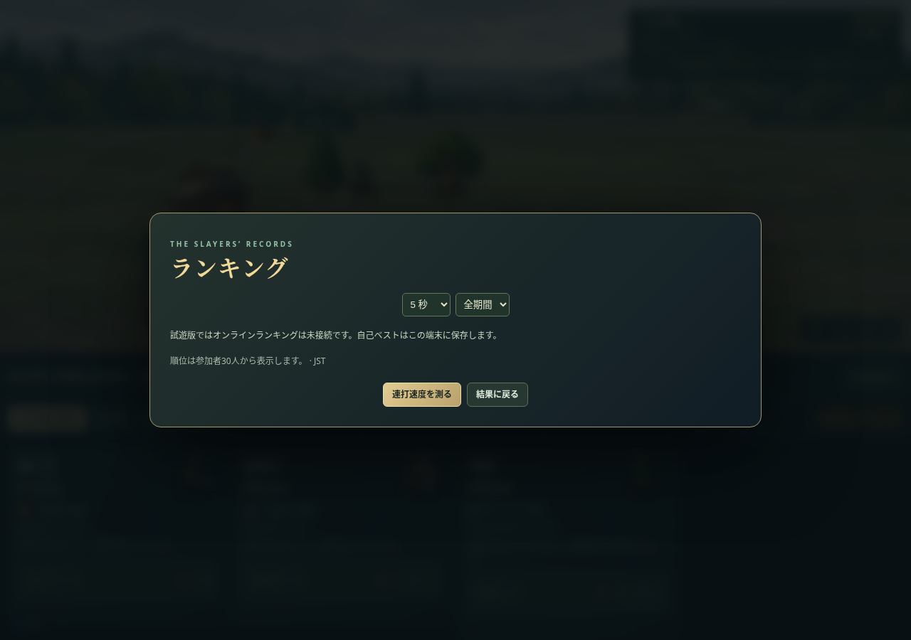

試遊版 · レビュー記録 · 拡張の設計と未実装範囲
資材を1個ずつ採って運び、資材で能力を選び、自分でレールを敷く試作です。加工設備と土地拡張はまだ実装していません。






新規から初回防衛・手動敷設・初回自動入庫まで資材付与なしで確認。スキル購入の動画も正規資材のみです。AIによる観点別検証で、実在の児童や作者本人の試遊評価ではありません。通し確認。音はゲーム出力ですが、音色は実聴で評価していません。



試遊版は広告・解析・オンラインランキングを無効にしています。旧forest試作はこちら。